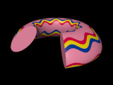
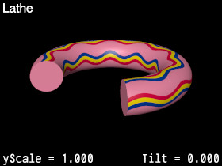
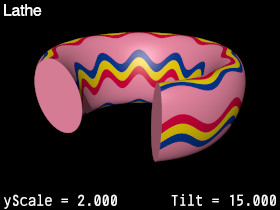
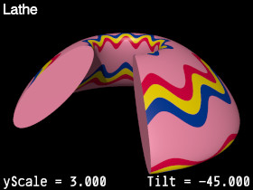
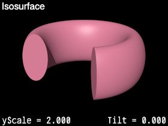
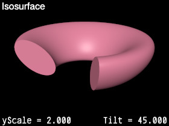
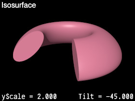

{kind=link}

A library module from the Persistence of Vision Ray Tracer (POV-Ray) Object Collection.
 TiltedTorus defines tori that are scaled in the polar (y) direction, then rotated about their circular axis. A toroid lathe is included for fast renders, and an isosurface function is defined for toroids that can be deformed with other functions or blobbed with other shapes.
The italicized nnnnnn in some of the file names represents the 6-digit number that is in the name of the .zip file.
| Key Files | |
|---|---|
| File | Description |
tiltedtorus.html |
The user manual (this document) |
tiltedtorus.inc |
The TiltedTorus software |
tiltedtorus.jpg |
Sample output |
tiltedtorus.pov |
A demonstration scene file |
tiltedtorus_fign.jpg |
Illustrations of various parameters, where the italicized n represents a decimal digit (6 images) |
READMEnnnnnn.html |
Important information about using the POV-Ray Object Collection |
| Other Files | |
| File | Description |
tiltedtorus.css |
A file used by the user manual |
tiltedtorus_description.txt |
A brief description of TiltedTorus |
tiltedtorus_keywords.txt |
A list of keywords |
tiltedtorus_prereqs.txt |
Prerequisites (empty file) |
tiltedtorus_thumbnail.jpg |
An illustration for the user manual |
cc-LGPL-a.png |
Administrative files |
Versionnnnnnn.js |
|
Note: The file tiltedtorus_cc-lgpl.png is no longer used.
TiltedTorus requires POV-Ray version 3.5 or later.
All file names in this module and all global and local identifiers defined in tiltedtorus.inc comply fully with the Object Collection naming standards, as revised August 2008 and proposed August 2012. The prefix for this module is “tiltedtorus,” including any uppercase and lowercase variants; to avoid conflicts, do not declare identifiers that start with this prefix plus an underscore.
The standard include files functions.inc and transforms.inc are used by tiltedtorus.inc.
Include this file once prior to using any of the features of TiltedTorus:
#include "tiltedtorus.inc"
Including the file more than once is harmless, though unnecessary.
An isosurface function for a “tilted” torus. Consistent with the POV-Ray torus primitive, the toroid is oriented in the x-z plane.
Note: In tiltedtorus.inc, the function arguments (other than x, y, and z) are prefixed with “TiltedTorus_Pn_” in order to avoid a POV-Ray namespace scope feature. In this document, these prefixes are omitted for clarity.
| Formal Parameter | Type | Description |
|---|---|---|
x, y, z |
float | The coordinates of the point to be evaluated. |
RMajor |
float | The major radius of the torus. |
rMinor |
float | The minor radius of the torus. |
yScale |
float | The polar (vertical, or y) scaling factor. |
Tilt |
float | The angle by which to rotate the torus. Positive values rotate the top outwards; negative values rotate the top inwards. |
Returns a vector that is the half-dimensions of a box that is sufficient to contain the toroid. It may be used for the isosurface container.
| Formal Parameter | Type | Description |
|---|---|---|
RMajor |
float | The major radius of the torus. |
rMinor |
float | The minor radius of the torus. |
yScale |
float | The polar (vertical, or y) scaling factor. |
Tilt |
float | The angle by which to rotate the torus. |
isosurface
{ function { TiltedTorus_fn (x, y, z, 4, 1, 2, -45) }
contained_by
{ box
{ -TiltedTorus_Container_v (4, 1, 2, -45),
TiltedTorus_Container_v (4, 1, 2, -45)
}
}
}
A “tilted” torus, implemented as a lathe. Consistent with the POV-Ray torus primitive, the toroid is oriented in the x-z plane. This object can take a uv-mapped texture.
| Formal Parameter | Type | Description |
|---|---|---|
RMajor |
float | The major radius of the torus. |
rMinor |
float | The minor radius of the torus. |
yScale |
float | The polar (vertical, or y) scaling factor. |
Tilt |
float | The angle by which to rotate the torus. Positive values rotate the top outwards; negative values rotate the top inwards. |
Sturm |
float/Boolean | If true, then the slower, but more accurate Sturmian root solver will be used. If the object renders with artifacts when false is used for this argument, then use true instead. |
     
| Identifier | Type | Description | Value |
|---|---|---|---|
TILTEDTORUS_VERSION |
float | The TiltedTorus version, in case the scene file needs that information. | 3.0 |
The flollowing identifiers were introduced in a previous version of TiltedTorus, but are no longer recommended. They are retained for backwards compatibility.
Any identifiers in tiltedtorus.inc that are not documented in this manual are considered “private” or “protected,” and are subject to change or elimination in a future update.
This shape was requested in povray.general, and I felt up to the challenge.
| Version | Date | Notes |
|---|---|---|
| 1.0 | 2012 July 21 |
|
| 2.0 | 2014 October 9 |
|
| 2.0a | 2014 November 7 |
|
| 3.0 | 2016 April 2 |
|